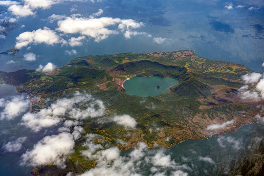

About Taal Volcano
Taal Volcano is one of the most active volcanoes in the Philippines, located on the island of Luzon in the province of Batangas. What makes it unique is its unusual geography: a volcano within a lake, inside a larger volcanic crater — often described as “a lake within a volcano within a lake.”
The volcano is part of the Pacific Ring of Fire and has recorded more than 30 eruptions in history, the most recent in 2020. Despite its activity, it remains a famous tourist destination, known for its stunning crater lake views, boat rides, and scenic hiking trails around Tagaytay Ridge.
- Location: Batangas, Luzon, Philippines
- Height: 311 meters (1,020 ft)
- Known For: Volcano island inside a lake, active crater
- Best Time to Visit: December – March (cool dry season)


